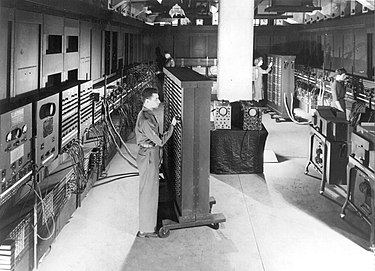
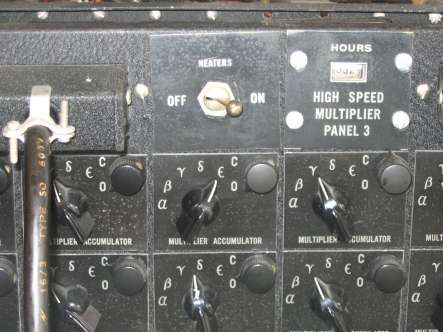

История и создание
Электронные вычислительные машины (ЭВМ) первого поколения были созданы в 1940-1950-х годах. Одной из самых известных таких машин является ENIAC (Electronic Numerical Integrator and Computer), который был построен в США в 1943-1946 годах. ENIAC стал первым полностью электронным компьютером, использовавшим вакуумные лампы для обработки данных.
Разработанный Джоном Мокли и Дж. Преспером Эккертом, ENIAC был первоначально предназначен для вычисления баллистических таблиц для армии США. Машина весила более 27 тонн, занимала 167 квадратных метров и потребляла около 150 киловатт электроэнергии, что было сопоставимо с потреблением небольшого завода.
ENIAC стал основой для будущих вычислительных машин и положил начало эре компьютеров, использующих электронные компоненты, такие как вакуумные лампы.
Как это работает: Вакуумные лампы
Вакуумные лампы были основным элементом ЭВМ первого поколения. Эти устройства использовались как переключатели и усилители для обработки сигналов, представляя бинарные состояния "включено" (1) и "выключено" (0). В ENIAC использовалось 18 000 таких ламп. Каждая лампа выполняла функцию переключателя, который либо проводил электрический ток, либо блокировал его. Это позволяло производить арифметические вычисления и логические операции.

Проблемой было то, что лампы часто выходили из строя — в среднем одна лампа ломалась каждые два дня, что требовало постоянного обслуживания.
Основные принципы работы
В ENIAC было несколько отдельных модулей, каждый из которых выполнял определенную задачу. Данные передавались между модулями через длинные кабели, что требовало от операторов вручную соединять контакты и проводить настройки. Программирование ENIAC также было довольно трудоемким процессом, потому что оно заключалось в физическом подключении проводов в нужных местах, что имитировало выполнение программ.
Применение и наследие
Несмотря на свои ограничения, ENIAC продемонстрировал потенциал вычислительных машин, использующих электронику. Применения ENIAC включали расчеты для ядерных исследований, баллистики и метеорологии. Этот компьютер стал основой для дальнейших исследований и разработки более эффективных и быстрых ЭВМ второго поколения.
ENIAC продолжал работать до 1955 года и оказал значительное влияние на последующие разработки в области вычислительной техники. Его существование доказало важность автоматизации вычислений и стало первым шагом к созданию универсальных электронных компьютеров.